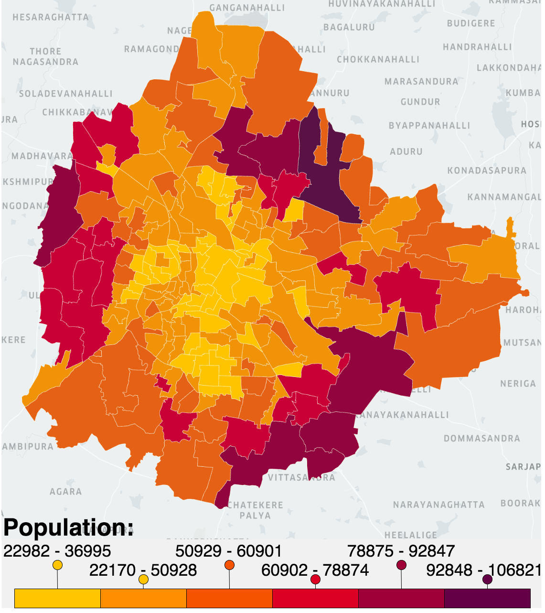

This is a city-scale agent-based simulator for the city of Bengaluru, built based on the descriptions given in this
study of non-pharmaceutical interventions (from the Imperial College, London), this
paper on pandemics in SE Asia, and its associated
supplementary material.
The simulator instantiates a smaller scale Bengaluru with population 100,000 across its
198 wards. The population distribution, employed fraction, age distribution, and
household size distribution are based on 2011 census data (with scaling for population growth).
Commute distances, workplace sizes, and school sizes are based on Thailand data given in the aforementioned
supplementary material.
A description of the simulator and its implementation is under preparation.

You can adjust the following parameters before
launching the simulator